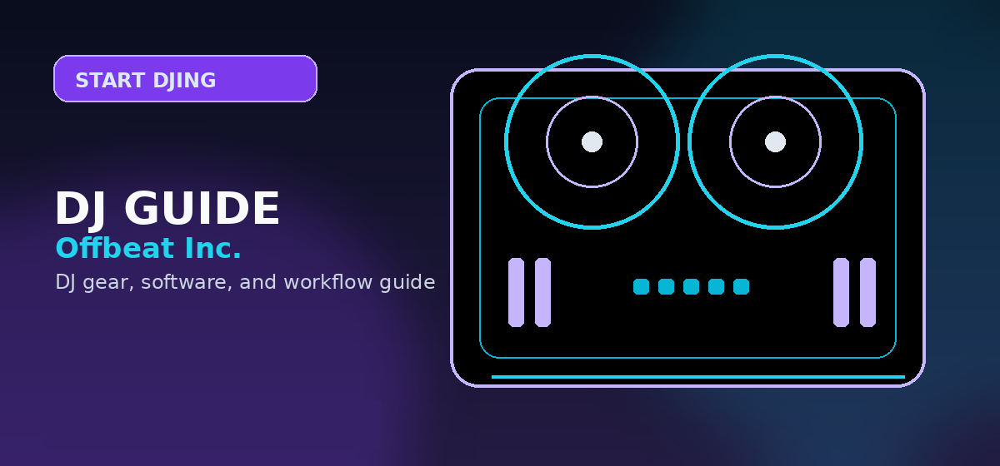

Best Online DJ Courses 2026: Master the Decks from Home (Beginner to Pro)
Best online DJ courses 2026: beginner-to-intermediate picks from Udemy, Skillshare, YouTube — tested and ranked. Learn to DJ from scratch.

Disclosure: This page uses affiliate links. We may earn a commission at no extra cost to you. Full disclosure →
Learning to DJ in 2026 no longer requires an expensive apprenticeship or a physical academy. With the integration of AI-assisted beat-matching and the proliferation of high-fidelity remote learning, the barrier to entry has vanished. Whether you are staring at your first controller or looking to refine your phrasing for professional club sets, the digital landscape offers an array of structured paths. From the certification-style depth of Udemy to the project-based creativity of Skillshare and the raw, community-driven insights of YouTube, there is a lesson for every learning style. The key to success in 2026 is combining these theoretical frameworks with consistent, hands-on practice. This guide breaks down the top-rated online resources to help you stop "button-mashing" and start crafting seamless, professional sonic journeys that keep the dancefloor moving.
Beginner Foundations: Starting Your Journey in 2026
For the absolute novice, the goal is to overcome the "technical wall"—understanding gain stages, EQing, and basic synchronization. In 2026, the best beginner courses focus on software-agnostic principles before diving into specific tools like Rekordbox or Serato. Look for courses that emphasize "Active Listening" and rhythmic awareness. Top-rated beginner modules now include interactive quizzes and AI-driven feedback loops that analyze your transitions. The focus has shifted from merely matching BPMs (which software now handles) to understanding the energy of a track. Beginners should prioritize lessons that teach the "Rule of Three" in phrasing and the basics of harmonic mixing using the Camelot wheel, ensuring their first few mixes sound musical rather than mechanical.
Intermediate Growth: Leveling Up Your Transitions
Once you can beat-match and blend, the intermediate phase is about artistry and curation. Intermediate courses in 2026 move beyond the basics, focusing on advanced techniques like "word-play" mixing, loop-manipulation, and the strategic use of FX to build tension. At this level, learners should seek out specialized masterclasses that teach "Reading the Room"—the psychological aspect of DJing. These lessons cover how to pivot a set based on crowd energy and how to structure a three-hour journey rather than a 15-minute medley. Emphasis is placed on "surgical EQing," where you carve out space for the incoming track's bassline without causing clipping or muddy frequencies, a hallmark of professional-grade performance.
Platform Breakdown: Udemy vs. Skillshare
Choosing a platform depends on your desired outcome. Udemy remains the gold standard for comprehensive, linear certifications. Courses like "The Complete 2026 DJ Masterclass" offer a syllabus-driven approach with lifetime access, making them ideal for those who want a "degree" in DJing. Conversely, Skillshare is designed for the creative hobbyist. Its project-based model encourages you to "Create a 30-Minute Sunset Mix" or "Design a Genre-Bending Transition," focusing on output over theory. While Udemy provides the deep technical manual, Skillshare provides the creative spark. Udemy is typically a one-time purchase (often discounted), whereas Skillshare operates on a subscription model, allowing you to pivot between DJing, music production, and marketing.
The Power of Free: Mastering DJing via YouTube
YouTube remains the most vital resource for real-time trends and "gear-porn" tutorials. In 2026, channels like Crossfader and Digital DJ Tips have evolved into comprehensive hubs offering free "mini-courses" that rival paid content. The advantage of YouTube is its immediacy; when a new controller drops or a software update changes the workflow, YouTube has a tutorial within hours. However, the danger is "tutorial hell"—watching endless videos without practicing. To succeed here, students must follow a "Watch One, Do One" philosophy. Use YouTube for specific problem-solving (e.g., "How to use the new Stem separation on the DDJ-FLX10") rather than as a primary structured curriculum.
2026 Online Learning Comparison Table
| Course/Platform | Level | Est. Price | Best For | Key Pro | Key Con |
|---|---|---|---|---|---|
| Udemy Masterclass | Beg/Int | $14.99 - $199 | Structured Learning | Comprehensive Syllabus | Can feel overly rigid |
| Skillshare | Beg/Int | $160/year | Creative Projects | Fast, actionable tasks | Subscription cost |
| YouTube (Top Hubs) | All | Free | Gear Tips & Trends | Zero cost, high variety | Lacks structured path |
| Private Mentorship | Advanced | $50 - $150/hr | Pro Career Path | Personalized Feedback | Most expensive option |
Quick Verdict
- Best for the Absolute Beginner: Udemy. The structured path prevents you from skipping critical fundamentals.
- Best for the Creative/Hobbyist: Skillshare. The project-based approach keeps motivation high through tangible results.
- Best for Technical Updates: YouTube. Unbeatable for staying current with 2026 hardware and software patches.
- Best for Aspiring Pros: A hybrid approach—Udemy for the foundation, followed by private mentorship for the polish.
Investing in your education is the fastest way to move from the bedroom to the booth. While the gear provides the sound, your knowledge provides the soul of the mix. Ready to start your journey? Check out our curated list of recommended gear and course bundles via the affiliate links below to get the best 2026 pricing and exclusive student discounts.
Bottom line: For structured DJ training in 2026, start with free YouTube channels like Crossfader and Digital DJ Tips to build fundamentals, then invest in a Udemy masterclass for syllabus-driven progression. Skillshare is ideal if you prefer project-based learning with tangible mix outputs. Get a starter controller on Amazon →
Shop on Amazon
Get the gear to practice what you learn — DJ controllers for every level on Amazon.
Content verified and updated for 2026. All product links checked for availability and pricing accuracy.
Have a question not covered in the FAQ? Check our DJ Software FAQ or Beginner DJ Hub for more information.
Frequently Asked Questions
What is the best online DJ course for beginners?
Crossfader on Udemy, Digital DJ Tips Academy, and Scratch DJ Academy Online are top-rated. Crossfader's courses are especially popular for their structured progression from beginner to advanced.
How long does it take to complete an online DJ course?
Most beginner DJ courses are 4–12 hours of video content. Taking your time and practicing alongside the lessons, you can become competent in 2–4 weeks.
Can you really learn DJing online?
Yes. Online DJ courses teach software operation, beatmatching theory, mixing techniques, and music theory. The fundamentals are fully teachable online — practice on your own gear applies the lessons.
Are free YouTube DJ tutorials good enough?
YouTube has excellent free content. Channels like DJ TechTools, Crossfader, and DJSuperTutor cover everything from basics to advanced mixing. Paid courses offer more structure and progression.
How much do online DJ courses cost?
Udemy courses go on sale for $12–$20 regularly. Digital DJ Tips Academy is ~$37/month. Scratch DJ Academy Online is ~$49/month. Free options exist on YouTube for self-directed learners.